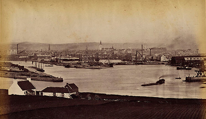

From shore to shore
Eadar Cladaichian
Roon the Shores
Menu
About the collection
The photographers
Locations
East
West
North
Living memories
Resources
Home
Locations
East
East
Aberdeen
Carnourstie
Dundee
St Andrews
Fife
Firth of Forth
Cockenzie
North Berwick
View locations on a map
Aberdeen Harbour

Aberdeen from Torry
Making Smoked Haddocks
Taking a Dip at Carnoustie
Old Tay Bridge from S (after accident)
St Andrews Castle
St Monance [sic] from West
The Toft, Elie, Fife
The Forth Bridge
Forth Bridge (construction)
Fishwives at Cockenzie Harbour
Mending the nets
Young woman at the shore, Cockenzie
Children and adults
Group of women and man
Adult showing model sailboat to boys
Two old men at the shore pointing to the sea
Children bathing at Cockenzie Harbour
Rowers, North Berwick
North Berwick views
Tantallon Castle

{kind=link}
{kind=link}
{kind=link}
{kind=link}
{kind=link}
{kind=link}
![St Monance [sic] from West](../../images/0021.jpg){kind=link}
{kind=link}
{kind=link}
{kind=link}
{kind=link}
{kind=link}
{kind=link}
{kind=link}
{kind=link}
{kind=link}
{kind=link}
{kind=link}
{kind=link}
{kind=link}
{kind=link}